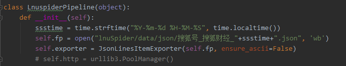

很显然，这里什么都没准备写
真的没写
def __init__(self):
ssstime = time.strftime("%Y-%m-%d %H-%M-%S", time.localtime())
self.fp = open("lnuSpider/data/json/搜狐号_搜狐财经_"+ssstime+".json", 'wb')
self.exporter = JsonLinesItemExporter(self.fp, ensure_ascii=False)
# self.http = urllib3.PoolManager()
我放个图片看看
文档的编写比较简单，直接使用<p>标签，在标签内写入文本，若需要换行则可以再加上一个<p>标签。
如果你需要插入一段代码 则需要使用<pre class="prettyprint">标签
虽然不保证跟ide一样的识别度。但是变色高亮总是让人看的舒服。下面是一段代码示例
=============================================
def __init__(self):
ssstime = time.strftime("%Y-%m-%d %H-%M-%S", time.localtime())
self.fp = open("lnuSpider/data/json/搜狐号_搜狐财经_"+ssstime+".json", 'wb')
self.exporter = JsonLinesItemExporter(self.fp, ensure_ascii=False)
# self.http = urllib3.PoolManager()
值得注意的事 前面您所看到的标签，虽然有着正确的写法，但是却没有发挥其再html中应有的效果。 那是因为在源码编写时用了 & it; 和 & gt; 来表示一对尖括号
添加图片的话放到pic文件夹即可
首先需要写出一个h3的标题标签，比如<h3 id="write_left_bar">侧边栏编写</h3> , id如果需要的话记得加下划线。其次需要在<ul class="docs-nav" id="menu-left">中加入一条li标签，id格式需要对应。
有些时候刚打开页面未加载完全时侧边栏不会跟随浏览一起移动，或者代码段没有高亮变色，此时等待网页加载完全即可。